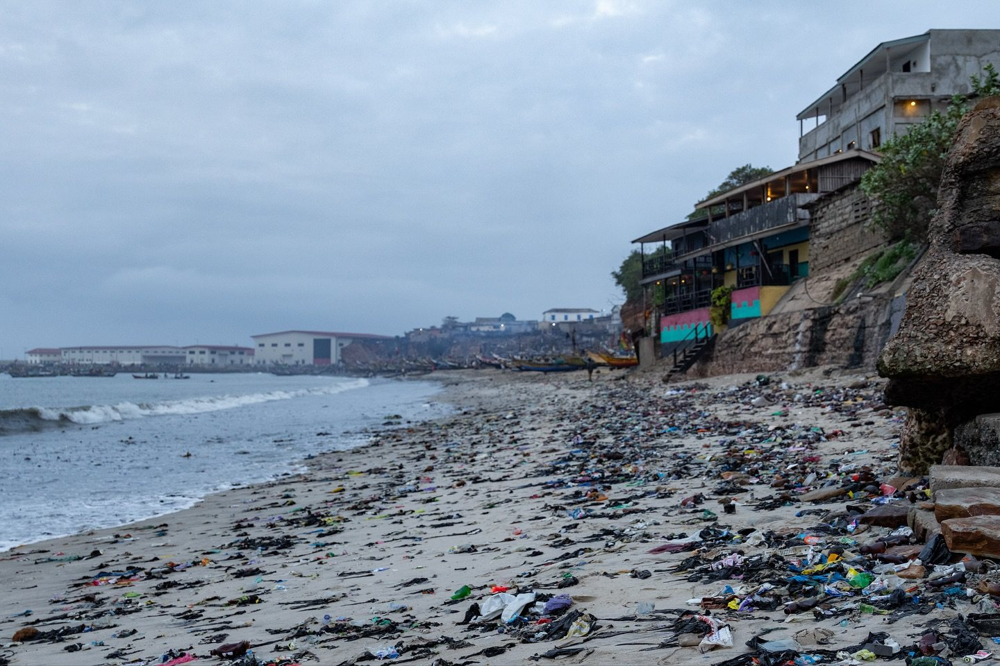

Ideas · Article 5 of 5
What a Beach Cleanup in Accra Changed About the Way I See the Built Environment
Sometimes an experience does not give you an answer. It simply changes the questions you start asking.

I did not go to Accra expecting a beach cleanup to change the way I thought about real estate.
I was there in 2025 and had joined a cleanup organised with The OR Foundation. Our task was practical: clear fashion and plastic waste from the shoreline.
For me, however, simply being beside the water meant something else.
Years earlier, I had lost my best friend to drowning at Elegushi Beach in Lagos. Afterwards, I stopped going to beaches and avoided large bodies of water.
It wasn't a decision I spent much time analysing. Staying away was easier.
Then, years later, I found myself standing on another West African coastline, picking waste from the shore.
I had returned to somewhere I had taught myself to avoid.
But what stayed with me afterwards wasn't simply the fact that I went back.
It was what I noticed while I was there.
Looking beyond the clean-up
As we worked along the shoreline, my attention moved towards Jamestown and the communities around the coast.
My relationship with the water was personal. I could leave at the end of the clean-up. I could return home and, if I wanted, continue avoiding beaches altogether.
For people whose homes, work or daily lives are tied to the coastline, that relationship is different.
That distinction stayed with me.
I want to be cautious about what I claim from one experience. Spending time at a beach clean-up did not suddenly make me an expert on Jamestown, coastal livelihoods or environmental vulnerability in Ghana.
What it did was make me question something I had previously understood mostly in the abstract.
People do not experience environmental problems from equal positions.
The ability to distance yourself from an environmental problem is itself a form of choice.
Not everyone has it.
I started noticing the same question elsewhere
When I returned to my professional world, that thought followed me.
Buildings are full of decisions that most occupants never make. Different people determine the materials, lighting, cooling system operations, drainage designs, usage of water and the level of efficiency or resilience worth paying for.
However, these are not the eventual occupants the building.
The eventual occupants work, shop and live in the building. They also pay energy bills or service charges, experience the indoor temperature however way it is, and deal with interruptions when systems fail.
The parallel is not perfect, and I would not pretend that a commercial building and a coastal community present the same challenge.
But the same question began to interest me:
How much influence do people have over the environmental conditions they eventually inherit?
That question has stayed with me.
Sustainability became less abstract
Before then, I would usually encounter sustainability through familiar professional language.
Energy efficiency, water conservation, waste management, building systems and operating costs.
These things remain important, and my work in facilities management has made that very clear but the clean-up gave those terms another dimension.
Energy efficiency affects bills, water systems affect availability and cost. Drainage systems and waste management affects individuals and businesses, while cooling sytems affects comfort, productivity and, increasingly, how people cope with weather conditions.
A sustainability decision eventually reaches a person somewhere.
Once I started thinking in those terms, sustainability became less about adding environmental features to buildings and more about asking what consequences our decisions create, and who will live with them.
It also made me reconsider my role
Facilities management often involves inheriting decisions.
By the time a facilities team assumes responsibility for a building, much of its physical form has already been determined.
We can optimise, repair, adjust operating schedules, monitor consumption, and make a financial case for replacing inefficient systems.
However, these changes can produce substantial results.
The shoreline experience, together with my professionalism, made me more interested in what happens before that point.
Who decides how a building should perform?
When are environmental risks considered?
How early do operating costs enter the conversation?
Do we think enough about the people who will eventually use the asset?
And what would change if sustainability influenced some of those decisions before construction rather than being introduced mainly as a correction afterwards?
I did not have complete answers.
I still don't, but I began asking different questions.
Returning to the water
Looking back, I think that is why the Accra experience remains important to me.
Going back to the coastline was personal, and working there shifted my attention outward.
I arrived with my own history with water. I left thinking more about other people's relationships with the environments around them.
It would be too neat to say that one afternoon created my interest in sustainability. It didn't.
My professional experiences, education and subsequent work have shaped that interest too.
What the clean-up did was give me another lens through which to look at things I was already beginning to encounter professionally.
Buildings are not simply assets, infrastructure is not simply capital expenditure and environmental performance is not simply a metric. However, people live inside the consequences of the decisions we make.
That idea now sits quietly behind many of the questions I ask about the built environment.
When we design, invest, operate or develop, who gets to make the decision?
Who benefits from it?
Who pays for it over time?
And who has the least ability to walk away if we get it wrong?
I went to the shoreline to help clear waste and I left with better questions.
For me, that has proved far more useful than pretending I came away with all the answers.